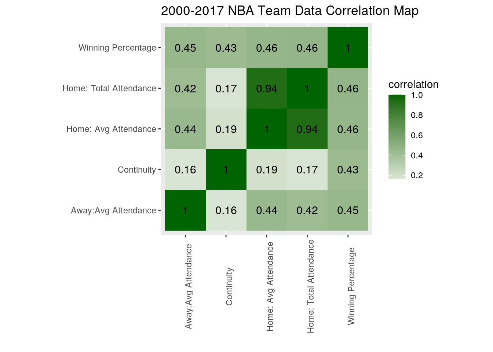
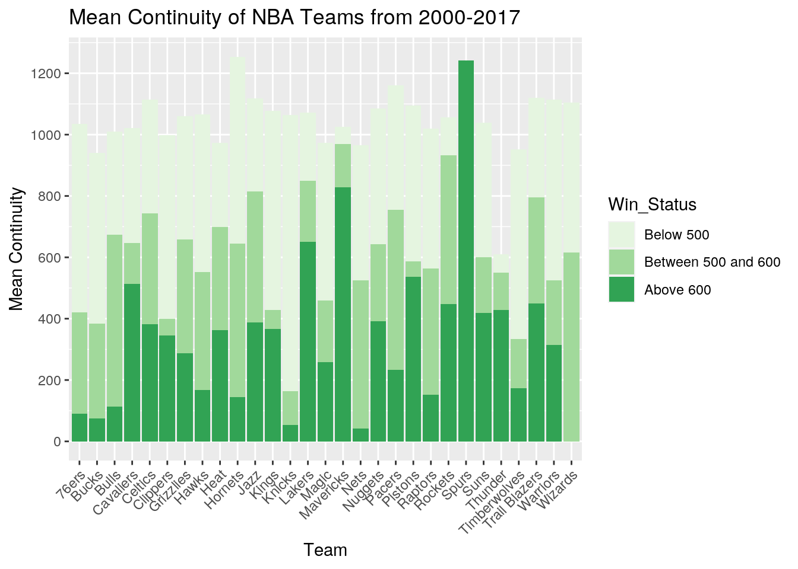
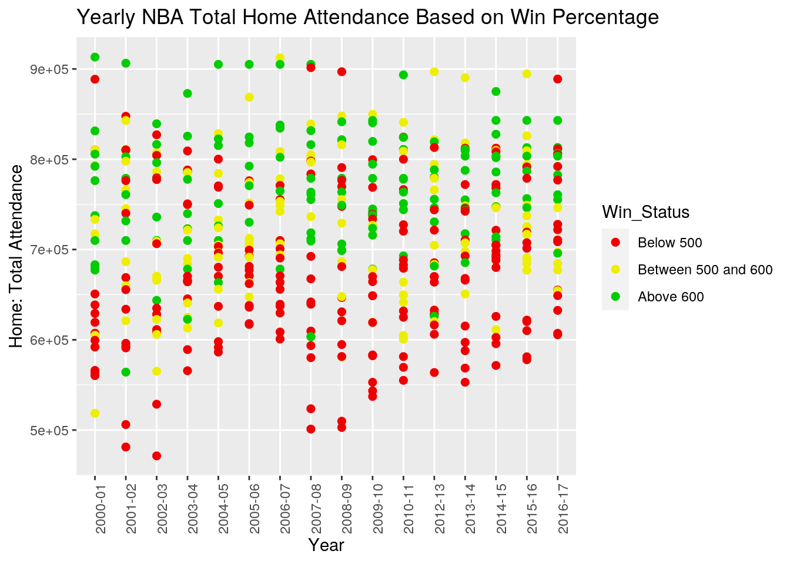
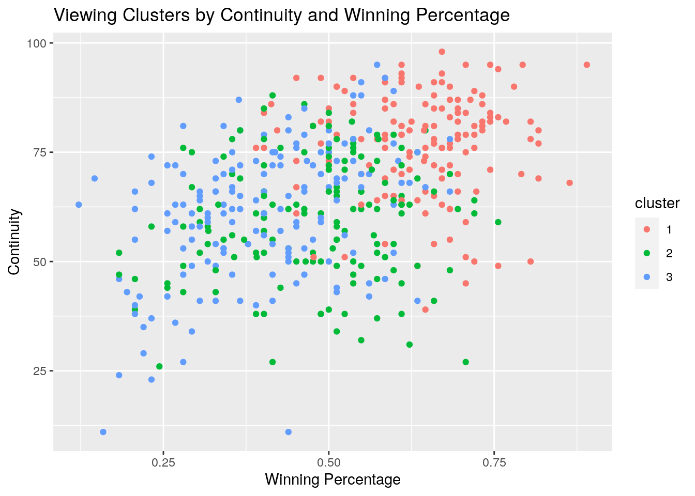
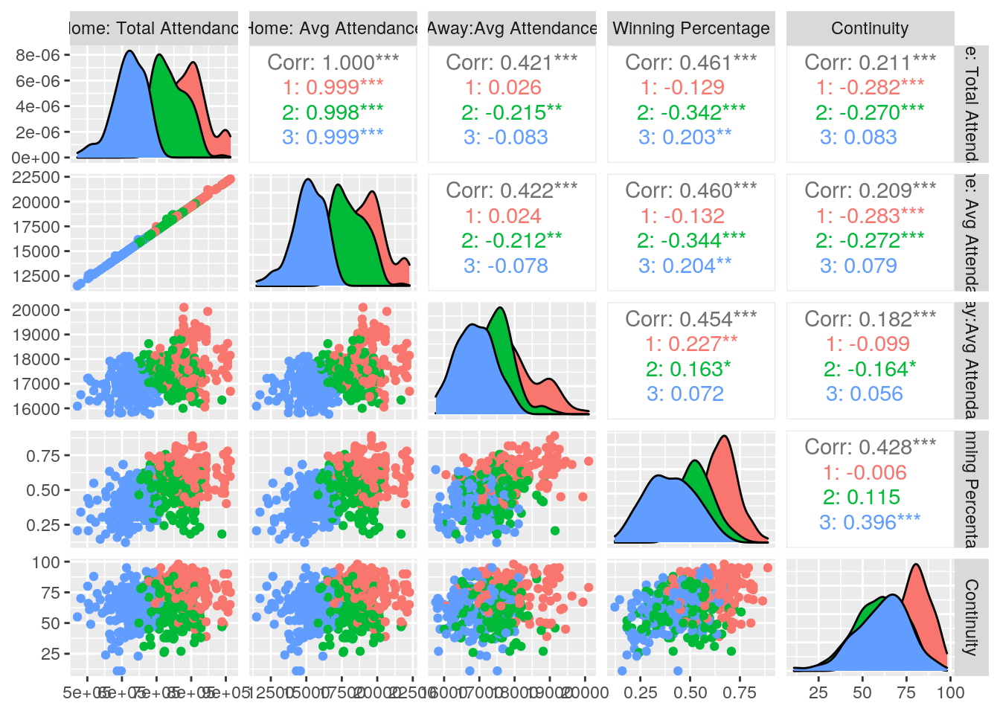
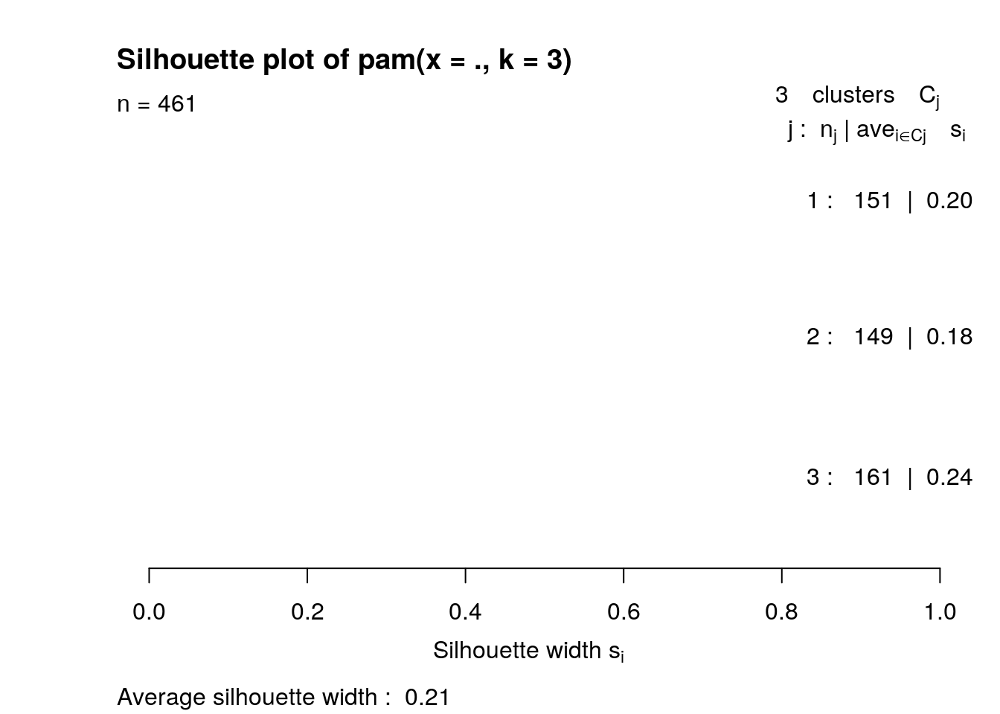

I decided to focus my project on various NBA team stats from the 2000-01 to 2016-17 NBA season. Basketball has always been one of my favorite hobbies, whether it be watching or playing, so that largely sums up why I chose such data! To start, I gathered 3 data sets that all shared an NBA team and year variable, although alot of the data was somewhat messy, with differences in variable and cell name spellings. The first dataset focused only on an NBA Continuity stat for each team and year, this variable represents the player turnover or the % of a team’s regular season minutes that were filled by players from the previous season’s roster. The second dataset featured various NBA game attendance data and the final dataset contained NBA team record data. Intially, I planned to provide support to my hypothesis that team continuity, winning percentage, and NBA game attendence were all positively correlated.
Begin by loading data
library(tidyverse)
NBACont <- read_csv("NBAContt.csv")
NBAAtt <- read_csv("NBAAtt.csv")
NBARec <- read_csv("NBARec.csv")First, I began working on dataset 1, NBA attendance data. This chunk represents some of the cleaning I performed before joining. I removed unwanted variables, renamed the current ones, and then used mutate to recode the year outputs to match the other two datasets.
NBAtt1 <- NBAAtt %>% select(-`Away: % Capactiy`) %>% rename(`Away:Avg Attendance` = "Away: Total Attendance",
`Away: % Capacity` = "Away: Avg Attendance", Year = "Starting Year",
`Home: % Capacity` = "Home: % Capactiy")
NBAtt1 <- NBAtt1 %>% mutate(Year = recode(Year, `2000` = "2000-01",
`2001` = "2001-02", `2002` = "2002-03", `2003` = "2003-04",
`2004` = "2004-05", `2005` = "2005-06", `2006` = "2006-07",
`2007` = "2007-08", `2008` = "2008-09", `2009` = "2009-10",
`2010` = "2010-11", `2011` = "2011-12", `2012` = "2012-13",
`2013` = "2013-14", `2014` = "2014-15", `2015` = "2015-16"))
NBAtt1 <- NBAtt1 %>% select(-`Home: % Capacity`, -`Away: % Capacity`)
head(NBAtt1)## # A tibble: 6 x 8
## Year Rank Team `Home: Total Ga… `Home: Total At… `Home: Avg Atte…
## <chr> <dbl> <chr> <dbl> <dbl> <dbl>
## 1 2015… 1 Bulls 41 894659 21820
## 2 2015… 2 Cava… 41 843042 20562
## 3 2015… 3 Mave… 41 825901 20143
## 4 2015… 4 Rapt… 41 812863 19825
## 5 2015… 5 NY K… 41 812292 19812
## 6 2015… 6 Heat 41 809350 19740
## # … with 2 more variables: `Away: Total Games` <dbl>, `Away:Avg
## # Attendance` <dbl>In this section, I actually added another year of team stats to the NBA attendance data to encompass more years. This data was read in then cleaned and full joined with the original NBA attendance data.
NBAAtt1617 <- read_csv("NBAatt1617.csv")head(NBAAtt1617)## # A tibble: 6 x 13
## Year Rank Team `Home: Total Ga… `Home: Total At… `Home: Avg Atte…
## <chr> <dbl> <chr> <dbl> <dbl> <dbl>
## 1 2016… 1 Bulls 41 888882 21680
## 2 2016… 2 Cava… 41 843042 20562
## 3 2016… 3 Rapt… 41 813050 19830
## 4 2016… 4 Mave… 41 811366 19789
## 5 2016… 5 NY K… 41 810741 19774
## 6 2016… 6 Jazz 41 806605 19673
## # … with 7 more variables: `Home: % Capacity` <dbl>, `Away: Total Games` <dbl>,
## # `Away:Avg Attendance` <dbl>, `Away: % Capacity` <dbl>, X11 <lgl>,
## # X12 <lgl>, X13 <lgl>NBAAttfinal <- NBAtt1 %>% full_join(NBAAtt1617)
NBAAttfinal <- NBAAttfinal %>% mutate(Year = recode(Year, `2016-2017` = "2016-17"))
NBAAttfinal <- NBAAttfinal %>% mutate(Team = recode(Team, `NY Knicks` = "Knicks"))
head(NBAAttfinal)## # A tibble: 6 x 13
## Year Rank Team `Home: Total Ga… `Home: Total At… `Home: Avg Atte…
## <chr> <dbl> <chr> <dbl> <dbl> <dbl>
## 1 2015… 1 Bulls 41 894659 21820
## 2 2015… 2 Cava… 41 843042 20562
## 3 2015… 3 Mave… 41 825901 20143
## 4 2015… 4 Rapt… 41 812863 19825
## 5 2015… 5 Knic… 41 812292 19812
## 6 2015… 6 Heat 41 809350 19740
## # … with 7 more variables: `Away: Total Games` <dbl>, `Away:Avg
## # Attendance` <dbl>, `Home: % Capacity` <dbl>, `Away: % Capacity` <dbl>,
## # X11 <lgl>, X12 <lgl>, X13 <lgl>Here, I begin making the next dataset, the nba continuity data, longer using pivot longer. Initially each NBA team was a variable.
NBACont <- NBACont %>% pivot_longer(2:31, names_to = "Team",
values_to = "Continuity") %>% rename(Year = "Season")
NBACont <- NBACont %>% mutate(Team = recode(Team, ATL = "Hawks",
BOS = "Celtics", CHA = "Hornets", CHI = "Bulls", CLE = "Cavaliers",
DAL = "Mavericks", DEN = "Nuggets", DET = "Pistons", GSW = "Warriors",
HOU = "Rockets", IND = "Pacers", LAC = "Clippers", LAL = "Lakers",
MEM = "Grizzlies", MIA = "Heat", MIL = "Bucks", MIN = "Timberwolves",
NJN = "Nets", NOH = "Hornets", NYK = "Knicks", OKC = "Thunder",
ORL = "Magic", PHI = "76ers", PHO = "Suns", POR = "Trail Blazers",
SAC = "Kings", SAS = "Spurs", TOR = "Raptors", UTA = "Jazz",
WAS = "Wizards"))
head(NBACont)## # A tibble: 6 x 3
## Year Team Continuity
## <chr> <chr> <chr>
## 1 2016-17 Hawks 78%
## 2 2016-17 Celtics 82%
## 3 2016-17 Hornets 78%
## 4 2016-17 Bulls 51%
## 5 2016-17 Cavaliers 87%
## 6 2016-17 Mavericks 55%Here I begin cleaning up the last dataset, NBA records, which only required som variable removal.
NBARec %>% select(-contains("X"))## # A tibble: 2,022 x 4
## Year Team Record `Winning Percentage`
## <chr> <chr> <chr> <dbl>
## 1 2016-17 Celtics 25-15 0.625
## 2 2015-16 Celtics 48-34 0.585
## 3 2014-15 Celtics 40-42 0.488
## 4 2013-14 Celtics 25-57 0.305
## 5 2012-13 Celtics 41-40 0.506
## 6 2011-12 * Celtics 39-27 0.591
## 7 2010-11 Celtics 56-26 0.683
## 8 2009-10 Celtics 50-32 0.61
## 9 2008-09 Celtics 62-20 0.756
## 10 2007-08 Celtics 66-16 0.805
## # … with 2,012 more rowsNBARecfinal <- NBARec %>% select(-contains("X"))##Part 2: Joining
Initially I began by combining two datasets, NBA records and attendance.
NBARecAtt <- NBAAttfinal %>% full_join(NBARecfinal)
NBARecAtt <- NBARecAtt %>% rename(`Total Home Att Rank` = "Rank")
head(NBARecAtt)## # A tibble: 6 x 15
## Year `Total Home Att… Team `Home: Total Ga… `Home: Total At…
## <chr> <dbl> <chr> <dbl> <dbl>
## 1 2015… 1 Bulls 41 894659
## 2 2015… 2 Cava… 41 843042
## 3 2015… 3 Mave… 41 825901
## 4 2015… 4 Rapt… 41 812863
## 5 2015… 5 Knic… 41 812292
## 6 2015… 6 Heat 41 809350
## # … with 10 more variables: `Home: Avg Attendance` <dbl>, `Away: Total
## # Games` <dbl>, `Away:Avg Attendance` <dbl>, `Home: % Capacity` <dbl>, `Away:
## # % Capacity` <dbl>, X11 <lgl>, X12 <lgl>, X13 <lgl>, Record <chr>, `Winning
## # Percentage` <dbl>Then I merge this new combined dataset to the final continuity dataset. Because I was only looking at teams from 2000-2017, I sliced only these desired rows for the data. For both of these join instances I decided to use fulljoin largely because I had organized the data to fit more nicely before joining. Still, the datasets all shared the Team and Year variable. It should also be noted another reason for dropping the pre 2000 years was because of large amounts of missing, especially for the main variables I wanted to analyze.
NBAfinal <- NBARecAtt %>% full_join(NBACont)
NBAdata <- NBAfinal %>% slice(1:522)
NBAdata <- NBAdata %>% select(-contains("X"), -"Home: % Capacity",
-"Away: % Capacity")
head(NBAdata)## # A tibble: 6 x 11
## Year `Total Home Att… Team `Home: Total Ga… `Home: Total At…
## <chr> <dbl> <chr> <dbl> <dbl>
## 1 2015… 1 Bulls 41 894659
## 2 2015… 2 Cava… 41 843042
## 3 2015… 3 Mave… 41 825901
## 4 2015… 4 Rapt… 41 812863
## 5 2015… 5 Knic… 41 812292
## 6 2015… 6 Heat 41 809350
## # … with 6 more variables: `Home: Avg Attendance` <dbl>, `Away: Total
## # Games` <dbl>, `Away:Avg Attendance` <dbl>, Record <chr>, `Winning
## # Percentage` <dbl>, Continuity <chr>##Part 3: Utilize functions and create summary stats.
Before I began analyzing, I used mutate to change continuity into a numeric (percentage). Using this saved data from here out.
NBAfinaldata <- NBAdata %>% mutate(Continuity = as.numeric(gsub("%",
"", Continuity)))
head(NBAfinaldata)## # A tibble: 6 x 11
## Year `Total Home Att… Team `Home: Total Ga… `Home: Total At…
## <chr> <dbl> <chr> <dbl> <dbl>
## 1 2015… 1 Bulls 41 894659
## 2 2015… 2 Cava… 41 843042
## 3 2015… 3 Mave… 41 825901
## 4 2015… 4 Rapt… 41 812863
## 5 2015… 5 Knic… 41 812292
## 6 2015… 6 Heat 41 809350
## # … with 6 more variables: `Home: Avg Attendance` <dbl>, `Away: Total
## # Games` <dbl>, `Away:Avg Attendance` <dbl>, Record <chr>, `Winning
## # Percentage` <dbl>, Continuity <dbl>One of the first observations I wanted to make was finding the best winning percentages over all teams and seasons in the set. I already had a hint who it was, but it was fun to see it in R! For this stat I filtered by winning percentages over .75 and then arranged by descending after selecting.
NBAfinaldata %>% filter(`Winning Percentage` > 0.75) %>% select(Team,
Year, `Winning Percentage`) %>% arrange(desc(`Winning Percentage`))## # A tibble: 16 x 3
## Team Year `Winning Percentage`
## <chr> <chr> <dbl>
## 1 Warriors 2015-16 0.89
## 2 Warriors 2016-17 0.864
## 3 Spurs 2015-16 0.817
## 4 Warriors 2014-15 0.817
## 5 Mavericks 2006-07 0.817
## 6 Heat 2012-13 0.805
## 7 Cavaliers 2008-09 0.805
## 8 Celtics 2007-08 0.805
## 9 Lakers 2008-09 0.793
## 10 Spurs 2016-17 0.791
## 11 Pistons 2005-06 0.78
## 12 Spurs 2005-06 0.768
## 13 Spurs 2013-14 0.756
## 14 Bulls 2010-11 0.756
## 15 Celtics 2008-09 0.756
## 16 Suns 2004-05 0.756In this table I used summarize to generate column with mean home attendance for each team from a 2000-01 to 2016-17 span. Here I grouped by Team, then used summarize to generate a new column displaying the mean of total home attendance overall.
NBAfinaldata %>% group_by(Team) %>% summarize(mean_home_att = mean(`Home: Total Attendance`,
na.rm = T)) %>% arrange(desc(mean_home_att))## # A tibble: 30 x 2
## Team mean_home_att
## <chr> <dbl>
## 1 Bulls 856342.
## 2 Mavericks 804674.
## 3 Knicks 790358.
## 4 Jazz 776333.
## 5 Trail Blazers 769936.
## 6 Lakers 767721.
## 7 Spurs 763349.
## 8 Heat 753166.
## 9 Raptors 749821.
## 10 Pistons 747342.
## # … with 20 more rowsHere I created new variable using mutate. Taking the mean of the away and home attendance variables.
NBAfinaldata %>% mutate(avg_game_att = (`Home: Avg Attendance` +
`Away:Avg Attendance`)/2)## # A tibble: 522 x 12
## Year `Total Home Att… Team `Home: Total Ga… `Home: Total At…
## <chr> <dbl> <chr> <dbl> <dbl>
## 1 2015… 1 Bulls 41 894659
## 2 2015… 2 Cava… 41 843042
## 3 2015… 3 Mave… 41 825901
## 4 2015… 4 Rapt… 41 812863
## 5 2015… 5 Knic… 41 812292
## 6 2015… 6 Heat 41 809350
## 7 2015… 7 Warr… 41 803436
## 8 2015… 8 Trai… 41 794085
## 9 2015… 9 Jazz 41 791489
## 10 2015… 10 Clip… 41 786910
## # … with 512 more rows, and 7 more variables: `Home: Avg Attendance` <dbl>,
## # `Away: Total Games` <dbl>, `Away:Avg Attendance` <dbl>, Record <chr>,
## # `Winning Percentage` <dbl>, Continuity <dbl>, avg_game_att <dbl>Summary Statistics table.
my.summary <- function(x, na.rm = TRUE) {
result <- c(Mean = mean(x, na.rm = na.rm), SD = sd(x, na.rm = na.rm),
Median = median(x, na.rm = na.rm), Min = min(x, na.rm = na.rm),
Max = max(x, na.rm = na.rm), N = length(x))
}
ind <- sapply(NBAfinaldata, is.numeric)
sapply(NBAfinaldata[, ind], my.summary)## Total Home Att Rank Home: Total Games Home: Total Attendance
## Mean 15.531670 40.504798 702455.13
## SD 8.600953 1.894444 94189.98
## Median 16.000000 41.000000 704886.00
## Min 1.000000 33.000000 460719.00
## Max 30.000000 41.000000 913175.00
## N 522.000000 522.000000 522.00
## Home: Avg Attendance Away: Total Games Away:Avg Attendance
## Mean 17339.921 40.506718 17363.4472
## SD 2164.368 1.894438 760.3151
## Median 17317.000 41.000000 17305.0000
## Min 11286.000 33.000000 15761.0000
## Max 22272.000 41.000000 20102.0000
## N 522.000 522.000000 522.0000
## Winning Percentage Continuity
## Mean 0.5021328 66.12525
## SD 0.1526343 15.65547
## Median 0.5120000 67.00000
## Min 0.1220000 11.00000
## Max 0.8900000 98.00000
## N 522.0000000 522.00000Using the above code chunk and the knitr kable package below, I generated a summary table of statistics including mean, sd, median, min, max and n. I thought it was odd that the mean winning percentage was just at 500, I figured it would be a little lower or higher but it was right at even. It was also funny to analyze the min for winning percentage in comparison to the other warriors statistic brought up earlier.
summstats <- as.data.frame(sapply(NBAfinaldata[, ind], my.summary))
summstats %>% knitr::kable(caption = "Summary Statistics", digits = 2)| Total Home Att Rank | Home: Total Games | Home: Total Attendance | Home: Avg Attendance | Away: Total Games | Away:Avg Attendance | Winning Percentage | Continuity | |
|---|---|---|---|---|---|---|---|---|
| Mean | 15.53 | 40.50 | 702455.13 | 17339.92 | 40.51 | 17363.45 | 0.50 | 66.13 |
| SD | 8.60 | 1.89 | 94189.98 | 2164.37 | 1.89 | 760.32 | 0.15 | 15.66 |
| Median | 16.00 | 41.00 | 704886.00 | 17317.00 | 41.00 | 17305.00 | 0.51 | 67.00 |
| Min | 1.00 | 33.00 | 460719.00 | 11286.00 | 33.00 | 15761.00 | 0.12 | 11.00 |
| Max | 30.00 | 41.00 | 913175.00 | 22272.00 | 41.00 | 20102.00 | 0.89 | 98.00 |
| N | 522.00 | 522.00 | 522.00 | 522.00 | 522.00 | 522.00 | 522.00 | 522.00 |
#4 Visualization portion
library(ggplot2)After Running GGplot2 package I created a correlation data table, manually eliminating any rows that didn’t work with the data I wanted, including total games home and away, and attendance rank.
corelatNBA <- NBAfinaldata %>% select_if(is.numeric) %>% cor(use = "pair") %>%
as.data.frame %>% rownames_to_column("var1") %>% pivot_longer(-1,
names_to = "var2", values_to = "correlation") %>% slice(19,
20, 22:24, 27, 28, 30:32, 43, 44, 46:48, 51, 52, 54:56, 59,
60, 62:64)
head(corelatNBA)## # A tibble: 6 x 3
## var1 var2 correlation
## <chr> <chr> <dbl>
## 1 Home: Total Attendance Home: Total Attendance 1
## 2 Home: Total Attendance Home: Avg Attendance 0.937
## 3 Home: Total Attendance Away:Avg Attendance 0.424
## 4 Home: Total Attendance Winning Percentage 0.465
## 5 Home: Total Attendance Continuity 0.166
## 6 Home: Avg Attendance Home: Total Attendance 0.937Then I ran code to construct the heat correlation map. I was excited to see higher/positive correlations for my variables of interests. This included Continuity and winning perc (0.43), winning perc and away and home attendance (0.45 and 0.46), and even continuity and home and away attendance (0.17 and 0.16)
corelatNBA %>% ggplot(aes(var1, var2, fill = correlation)) +
geom_tile() + scale_fill_gradient2(low = "red", mid = "white",
high = "dark green") + geom_text(aes(label = round(correlation,
2)), color = "black", size = 4) + xlab("") + ylab("") + coord_fixed() +
ggtitle("2000-2017 NBA Team Data Correlation Map") + theme(axis.text.x = element_text(angle = 90))
Here, I created a categorical variable from my numeric winning percentage column using the following code.
NBAfinaldata$Win_Status <- cut(NBAfinaldata$`Winning Percentage`,
breaks = c(-Inf, 0.5, 0.6, Inf), labels = c("Below 500",
"Between 500 and 600", "Above 600"), right = FALSE)This was then used to create a barplot highlighting the relationship of mean continuity and win status (perc). The differences in green represent the proportion of the team spent at the level. For example the spurs remained above .600 for the 17 year span! Some teams like the wizards were never above the percentage.
na.omit(NBAfinaldata) %>% ggplot(aes(x = Team, y = Continuity,
fill = Win_Status), stat = "summary", fun = mean) + geom_bar(stat = "identity") +
theme(axis.text.x = element_text(angle = 45, hjust = 1)) +
ylab("Mean Continuity") + ggtitle("Mean Continuity of NBA Teams from 2000-2017") +
scale_fill_brewer(palette = "Greens") + scale_y_continuous(breaks = seq(0,
1400, 200)) For this data set, I wanted to emphasize the relationship between Home attendance and win status. Using the scatterplot, it’s easier to see how the better teams separate from the below 500 teams in attendance. Still this still didn’t prevent some outliers.
na.omit(NBAfinaldata) %>% ggplot(aes(x = Year, y = `Home: Total Attendance`,
color = Win_Status), stat = "summary", fun = mean) + geom_point(size = 2,
stat = "identity") + scale_color_manual(values = c("Red2",
"Yellow2", "Green3")) + ggtitle("Yearly NBA Total Home Attendance Based on Win Percentage") +
theme(axis.text.x = element_text(angle = 90))
##5 Clustering
library(cluster)
clustdata <- na.omit(NBAfinaldata) %>% select("Home: Total Attendance",
"Home: Avg Attendance", "Away:Avg Attendance", "Winning Percentage",
Continuity)
pam14 <- clustdata %>% scale %>% pam(k = 3)
pam14## Medoids:
## ID Home: Total Attendance Home: Avg Attendance Away:Avg Attendance
## [1,] 441 0.76647594 0.76366579 0.6542645
## [2,] 132 0.05791555 0.05411437 0.0951879
## [3,] 141 -0.94582909 -0.95120009 -0.6262435
## Winning Percentage Continuity
## [1,] 0.92212557 0.8944700
## [2,] -0.09945007 -0.3082722
## [3,] -0.49891234 -0.2449700
## Clustering vector:
## [1] 1 1 2 1 1 1 2 1 1 2 1 1 1 1 2 2 2 1 2 3 2 1 2 2 3 3 3 3 3 1 1 2 2 1 2 1 1
## [38] 1 2 2 1 1 2 2 2 1 1 2 2 2 2 2 2 2 3 3 3 3 3 1 2 1 1 1 1 1 2 1 2 1 2 1 2 1
## [75] 2 2 2 2 2 3 3 3 3 3 3 3 3 1 2 1 2 2 1 1 2 2 2 1 1 2
## [ reached getOption("max.print") -- omitted 361 entries ]
## Objective function:
## build swap
## 1.558499 1.543018
##
## Available components:
## [1] "medoids" "id.med" "clustering" "objective" "isolation"
## [6] "clusinfo" "silinfo" "diss" "call" "data"For my cluster, I decided to create 3 using the same 5 numeric variables I isolated earlier. It was cool to observe how the clusters seemed to create a subpar section, average section, and above average section for the grouping. The continuity and winning percentage graph I created below showed this well.
pamcluster1 <- clustdata %>% mutate(cluster = as.factor(pam14$clustering))
pamcluster1 %>% ggplot(aes(`Winning Percentage`, Continuity,
color = cluster)) + geom_point(stat = "identity") + ggtitle("Viewing Clusters by Continuity and Winning Percentage")
library(GGally)
ggpairs(pamcluster1, columns = 1:5, aes(color = cluster)) This plot was created to give a further in depth view of the results.
plot(pam14, which = 2) Unfortunately, the average for this cluster trash and not evident of any connections. While this might be partly to blame on the data used, It was interesting to observe such variables!
Note that the echo = FALSE parameter was added to the code chunk to prevent printing of the R code that generated the plot.